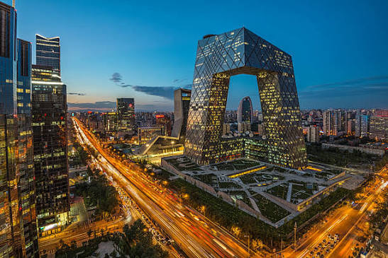

Ҷумҳурии Халқии Чин давлатест дар қисми Шарқии Осиё, ки бо иқтисоди тавоно, таърихи бисёрҳазорсола ва девори бузурги худ дар ҷаҳон машҳур аст. Пойтахти он шаҳри Пекин мебошад.

Пекин — пойтахти қадимӣ ва фарҳангии Чин аст, ки номи он дар забони чинӣ маънои «Пойтахти Шимолӣ»-ро дорад. Ин шаҳр маркази асосии сиёсӣ, маъмурӣ ва илмии кишвар буда, бо қасрҳои боҳашамати императорӣ (ба мисли Шаҳри Мамнӯъ) ва меъмории муосири худ машҳур аст.